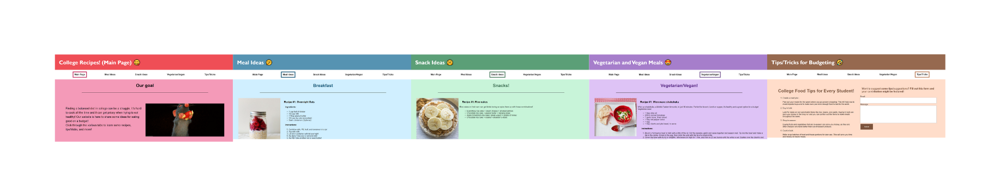

Report on p1: Rebecca Anderson and Megan Hinkel
Link to Design.

Technical Components
- There are 5 different pages for our college recipe website. The first page is an homepage for our college
recipe website. The second page, Meal Ideas, gives some simple meal ideas by time of day. The third page, Snack
Ideas,
gives various snack recipes. The fourth page gives specifically vegetarian and vegan recipes. The last page has
some
tips and tricks for food and a form to add suggestions.
- We have created a favicon that we use for each page.

- Each page has the same size header, with a different color specifiying the page.
- Under the header, we have 5 nagivation links to each of the pages. A rectangular box around the page you are
currently on indicates the page. A hover attributed is displayed, in which the link grows and becomes a solid
rectangle with white font color.
- For each page, the horizontal navigation bar becomes vertical. Additionally, the images go from side to side by
the recipes to above the recipes, and the form goes below the tips and tricks.
- Each image has a alt attribute.
- There are no errors with Nu or Wave. Each color pallate has enough contrast to satisfy wave.
- The Heading uses 'Gill Sans', 'Gill Sans MT', Calibri, 'Trebuchet MS', sans-serif;
All other elements use Helvetica, sans-serif, Arial;
- The tips and tricks page has a form for suggestions. To submit a form, a valid email address has to be provided.
- At the bottom of each of the recipes pages lists links to the websites the recipes were taken from.
-
The side is available at https://meganhinkel.github.io/343-s23-p1/index.html